Shibayama, Chiba: things to do, food and stays
Shibayama · Chiba
Shibayama
Highlighted on the Chiba map.
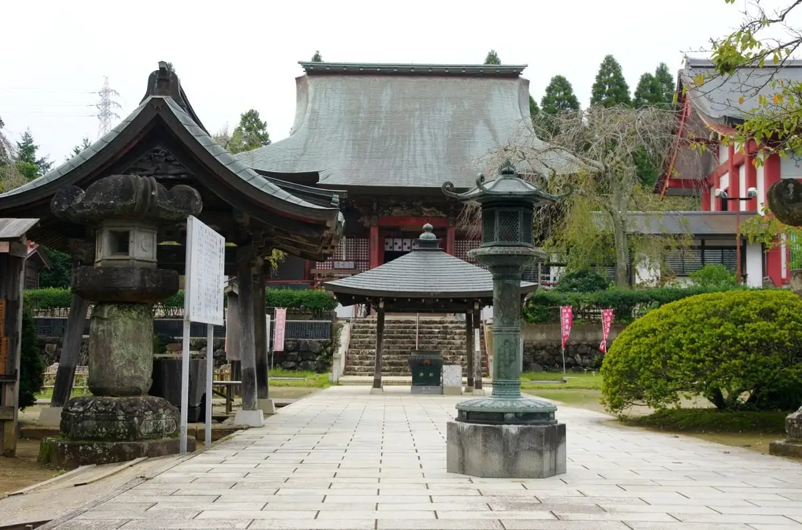
Stay
成田空港温泉 空の湯
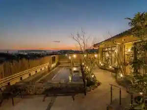
Naritakuko Onsen Sora No Yu
Inn at Naritakuko Onsen in Kayamanitta, Shibayama.
Dining
大衆肉料理 大幸
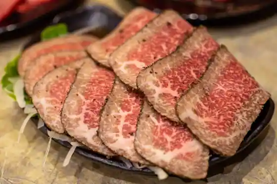
Taishu Nikuryori Daiko
空の駅 風和里しばやま レストランフワリ
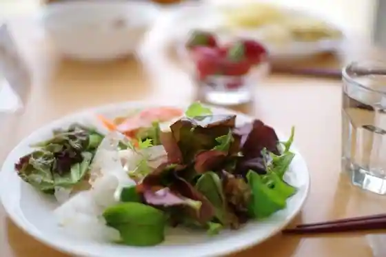
Sora No Eki Kaze Wa Sato Shibayama Restaurant Fuwari
そば工房 篠
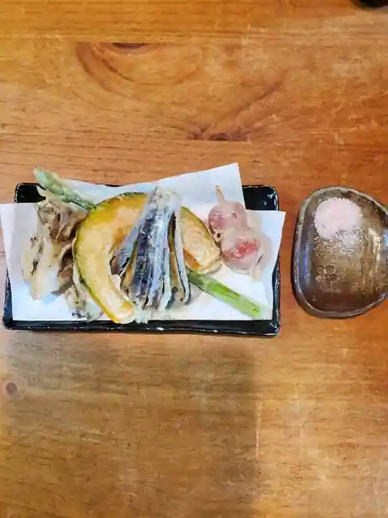
Soba Kobo Shino
食事処 天の川
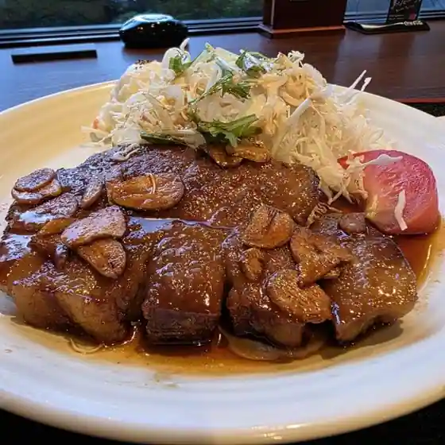
Shokuji Tokoro No Kawa
芝山ゴルフ倶楽部 レストラン
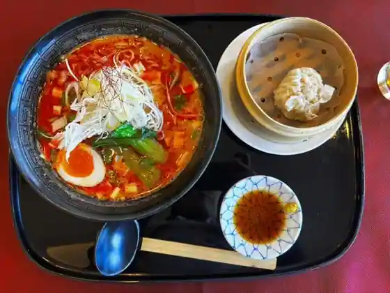
Shibayama Gorufu Kurabu Restaurant
京カントリークラブ
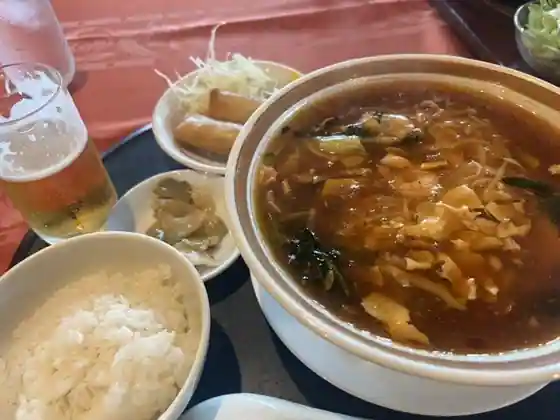
Kyo Kantorikurabu
道の駅 風和里しばやま
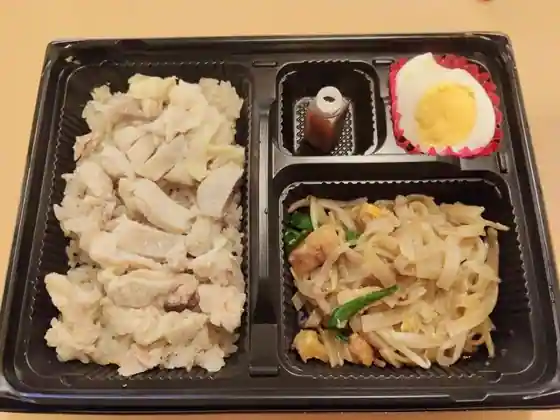
Michi No Eki Kaze Wa Sato Shibayama
空の駅 風和里しばやま
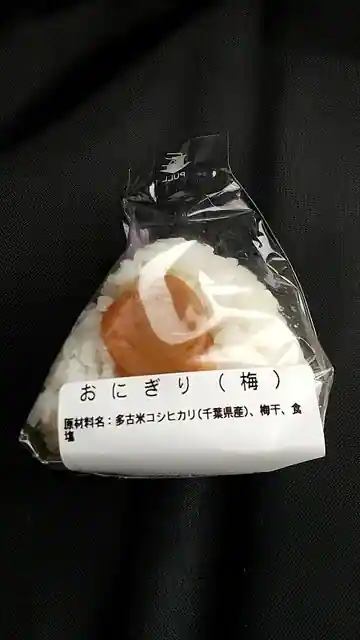
Sora No Eki Kaze Wa Sato Shibayama
隆松園
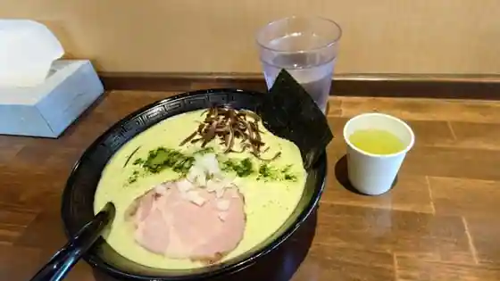
Takamatsu Sono
牛車
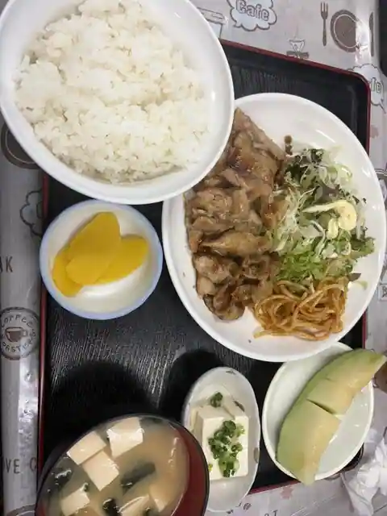
Gissha
ワールドフレーバーカフェ
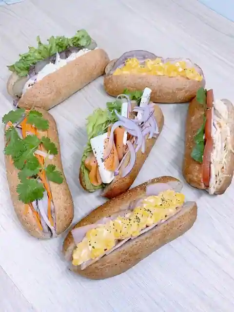
Warudofure Bar Cafe
イーグルレイクゴルフクラブ
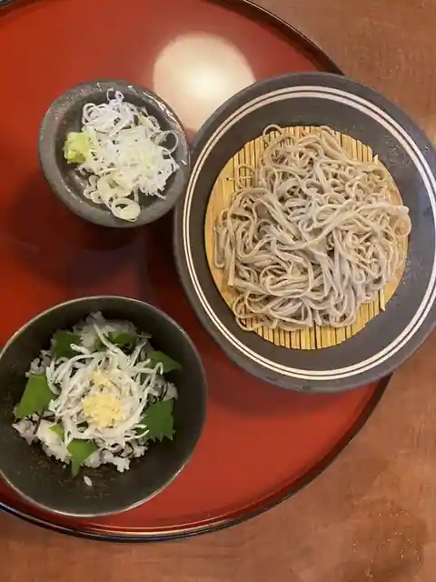
Igurureikugorufukurabu
キッチン・サテライト
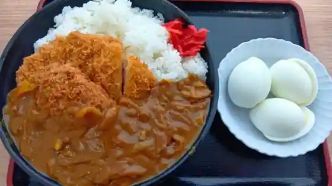
Kitchen Sateraito
食事処 菊
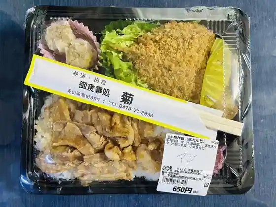
Shokuji Tokoro Kiku
バルーン
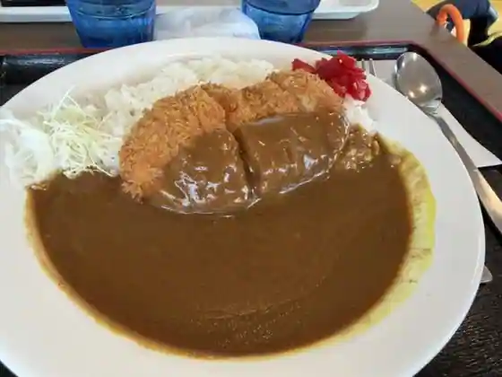
Barun
カフェ&バー きらほし
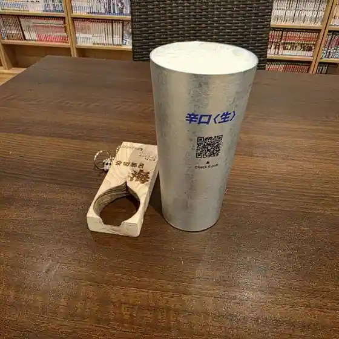
Cafe & Bar Kirahoshi
更生食堂
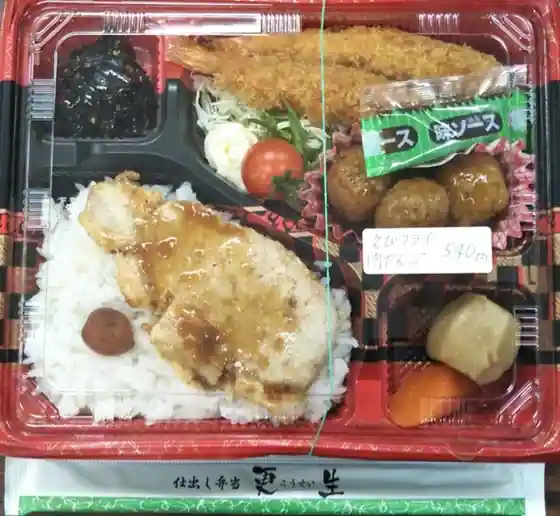
Kosei Shokudo
空と豆
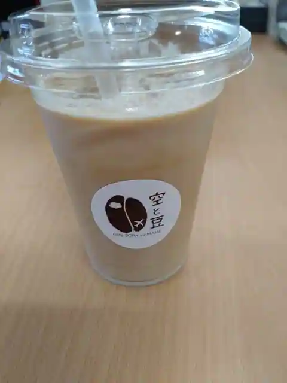
Sora To Mame
ふわりベーカリー
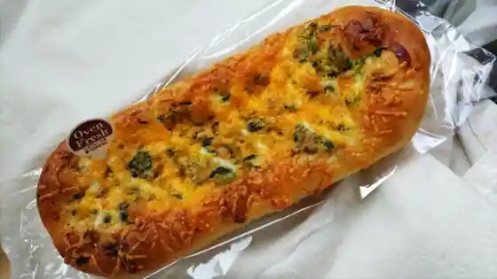
Fuwari Bakery
洋菓子のヒロタ 千葉工場売店
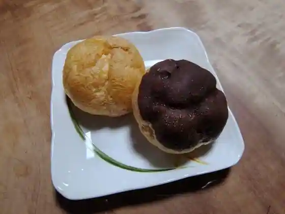
Yogashi No Hirota Chiba Kojo Bai
エハラピーナツ
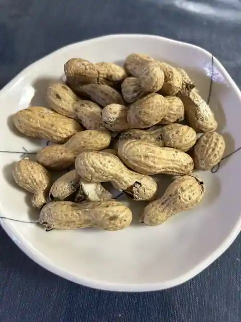
Eharapinatsu
うまや
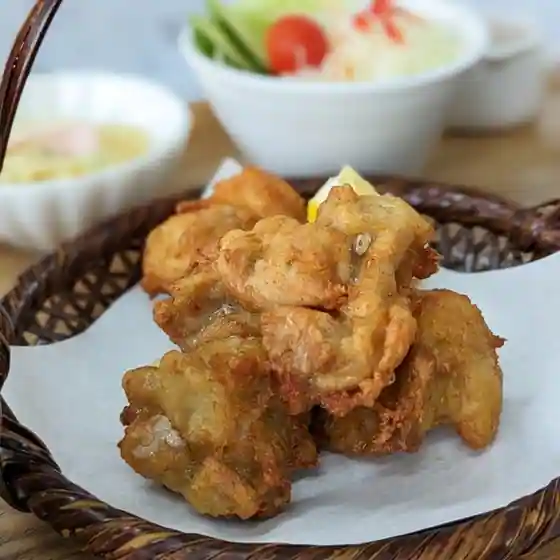
Umaya
和楽
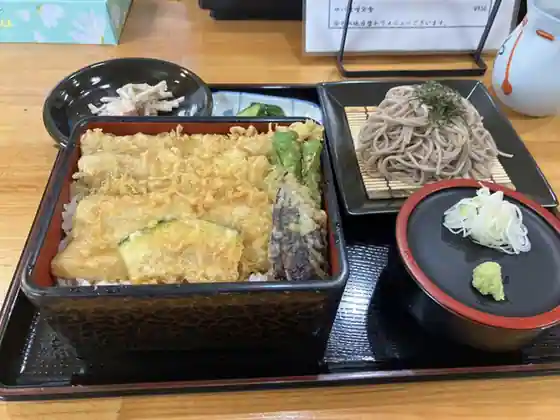
Wagaku
Sights
Naritakuko Onsen Sora Baths
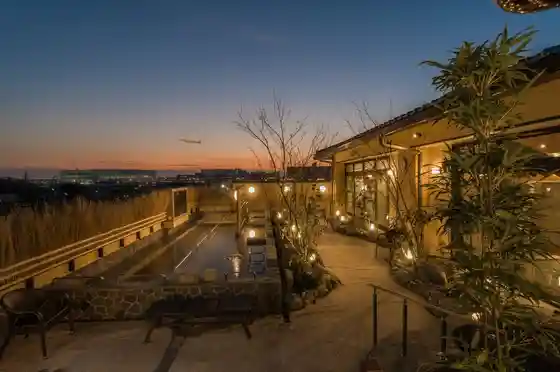
Koku Kagaku Museum
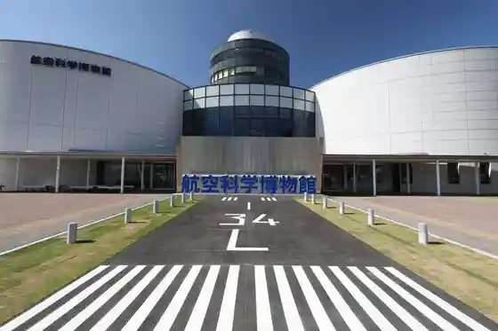
Hikoki no Oka
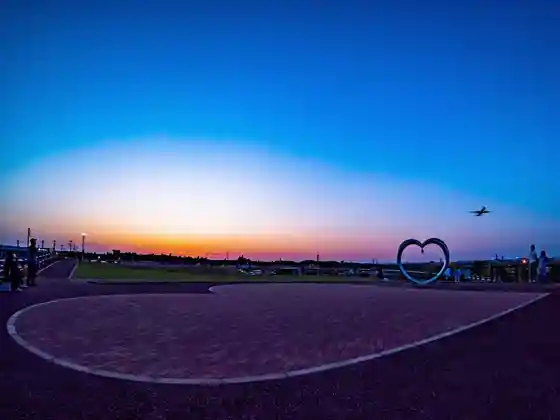
Sora no Eki Kaze Wa Sato Shibayama
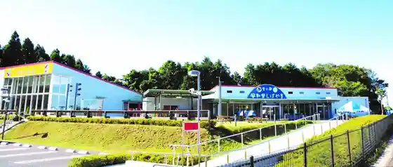
ANA O Shigoto Taiken Kyoshitsu / Koku Kagaku Museum
Shibayama Ritsu Shibayama Burial Mound Haniwa Museum
Roadside Station Kaze Wa Sato Shibayama
Guriinpotoeko Aguri Park
Kuhi Bu Manabi Sha Rabo
Shibayama Nio Mikoto Kannon Kyo Tera